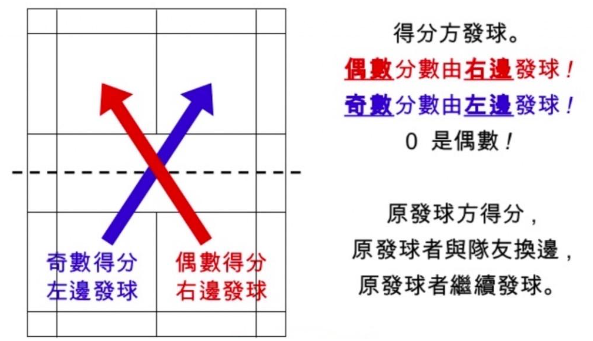

羽球單打規則
-
羽球比賽採「發球得分制」，當發球方贏球且得分才會換發球區來繼續發球。反之；若發球方輸球時，將失去發球權並由對方取得分數，且轉移發球權給對方。
- 比賽開始前，雙方會以擲硬幣來決定選擇權，贏的一方可以先選擇自己要發球權或是選場地；反之，輸的一方只能選擇贏的
一方剩下的選項。
- 正規比賽採三戰兩勝，每一局為21分，當雙方戰成20平局時，就會行成DEUCE的局面，也就是如網球比賽一樣，需
有一方贏兩球以上才獲勝；不過若一 直持續 DEUCE的局面比賽至29比29時，則先得「30分」的人拿下此局的勝利。
- 第一局完賽後雙方應交換場地，先發球方變成接球方；而決勝局，某方先得11分時，則雙方需互換場地，而發球者可繼續
發球。
- 發球者及接球者應站立於斜角相對的發球區，且不能踩到界線或是過界；
發球者得分若是「雙數」時，雙方皆站立在自己區域的右邊，得分為單數則為「左邊」；另外在羽球比賽中，「0分」要站在偶數區域發球。

- 發球者在發球時，其球拍打擊到球體底座時的瞬間，羽球應處在發球員的腰部以下。
- 羽毛球中的發球與回球都是允許觸網的，只要球越過球網都應繼續比賽；除非正在飛行的球觸及天花板或是球停留在網上，
亦或是落在地面時才判為死球。
- 單打得分區為藍色的區域；也就是記得長條型到最後方的延伸。